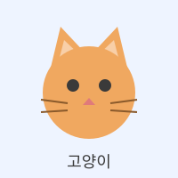
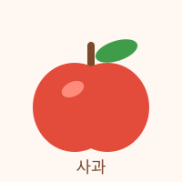
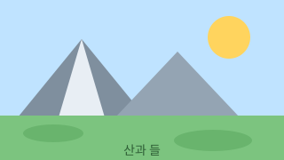

04단원 · 링크와 이미지
각 상자 안이 정답입니다. 상자 아래 회색 글은 왜 그렇게 되는지에 대한 해설입니다. 링크는 실제로 눌러 보고, 그림 크기는 눈으로 확인하세요.
문제 1 — 정답
같은 폴더에 있으므로 폴더 이름 없이 파일 이름만 썼습니다. 파란색과 밑줄은 우리가 넣은 것이 아니라 브라우저가 링크에 자동으로 붙여 주는 모양입니다.
문제 2 — 정답
href 는 그대로 두고 사이에 낀 글자만 바꿨습니다.
"경로 배우러 가기" 처럼 써도 정답입니다. 글자만 보고 목적지를 알 수 있으면 됩니다.
문제 3 — 정답
target="_blank" 앞의 밑줄을 빠뜨리면 새 탭이 아니라 "blank 라는 이름의 창" 이 됩니다.
rel="noopener" 는 새 탭으로 열린 쪽이 원래 페이지를 건드리지 못하게 막는 안전장치입니다.
문제 4 — 정답

이미지/ 를 앞에 붙여 폴더 안으로 들어갔습니다.
크기를 안 적었으므로 파일이 가진 원래 크기 200 × 200 그대로 나옵니다.
alt 는 "고양이.svg" 가 아니라 그림을 설명하는 말로 써야 합니다.
문제 5 — 정답
폴더를 지날 때마다 빗금을 하나씩 씁니다. 두 겹이므로 빗금도 두 개입니다.
별.svg 라고만 쓰면 이 파일이 있는 폴더에서 찾다가 실패합니다.
문제 6 — 정답
../ 로 04_링크와_이미지 폴더에서 먼저 나간 뒤,
01_HTML_시작하기 폴더로 다시 들어갔습니다.
나가기와 들어가기를 순서대로 읽으면 경로가 그대로 보입니다.
# 은 부르는 쪽에만 붙입니다.
도착지의 id 값은 lastPart 이지 #lastPart 가 아닙니다.
지금은 문서가 짧아 화면이 조금만 움직일 수 있습니다.
문제 8 — 정답
<a href="#"> 라고 써도 맨 위로 갑니다.
다만 주소창에 # 만 남아 보기에 좋지 않아서, 이름을 붙여 부르는 쪽을 권합니다.
문제 9 — 정답
mailto: 뒤에는 쌍점만 오고 빗금은 없습니다.
mailto:// 라고 쓰면 받는 사람 칸이 이상하게 채워집니다.
문제 10 — 정답
href 안의 번호와 화면에 보이는 번호가 같아야 합니다.
컴퓨터로 보는 사람은 눌러도 전화가 안 걸리므로, 번호가 눈에 보여야 옮겨 적을 수 있습니다.
문제 11 — 정답

가로만 정하면 세로는 원래 비율대로 따라옵니다.
원본이 200 × 200 인 정사각형이라 120 × 120 이 되었습니다.
값에는 단위를 붙이지 않습니다. 브라우저가 앞쪽 숫자만 읽고 뒤 글자를 버리기 때문에
120px 은 우연히 120 이 되지만, 10em 이라고 쓰면 10 픽셀이 되어 버립니다.
a 가 부모, img 가 자식입니다. 감싸기만 하면 그림 전체가 눌립니다.
링크 안에 글자가 없으므로 alt 가 링크 글자 노릇을 합니다.
그래서 "우리 로고" 가 아니라 갈 곳을 적었습니다.
가로 180 을 주니 세로는 비율대로 60 이 되었습니다.
문제 13 — 정답

alt 에는 보이는 것(산 두 개와 해)을,
figcaption 에는 어디서 찍은 무엇인지를 썼습니다.
두 글이 같으면 소리로 듣는 사람이 같은 문장을 두 번 듣게 됩니다.
좌우 여백은 브라우저가 figure 에 미리 넣어 둔 것입니다.
문제 14 — 정답
figcaption 을 줄 순서만 바꿔 맨 앞으로 올렸습니다.
맨 앞이면 위에, 맨 뒤면 아래에 보입니다. 가운데에 끼우면 안 됩니다.
alt 는 그림마다 하나씩, figcaption 은 묶음 전체에 하나뿐입니다.
세 가지가 한꺼번에 들어 있습니다. #photoZone 은 문서 안 이동,
이미지/아이콘/별.svg 는 두 겹 경로, a 로 감싼 img 는 그림 링크입니다.
그림이 링크가 되었으므로 alt 에는 갈 곳을 적었습니다.
figure 안에 a 를 넣어도 아무 문제가 없습니다.
세 가지 모두 에러가 나지 않는 잘못이었습니다. (가) 는 글자 색이 검은색인 것으로, (나) 는 눌러 봤을 때 하얀 오류 화면이 뜨는 것으로, (다) 는 그림이 점처럼 작아진 것으로 알아챌 수 있습니다. HTML 은 틀려도 조용합니다. 화면을 눈으로 확인하는 수밖에 없습니다.
── 이 단원에서 꼭 남길 것 ──
1. 링크는 <a href="목적지">글자</a>,
그림은 <img src="경로" alt="설명" />.
2. 경로의 기준은 언제나 지금 열려 있는 파일이 있는 폴더입니다.
3. 들어갈 때 폴더이름/, 나갈 때 ../.
4. 문서 안 이동은 id 와 #이름 한 쌍입니다.
5. alt 는 필수입니다. 링크가 된 그림이면 갈 곳을 씁니다.
6. 그림과 설명을 한 짝으로 묶을 때는 figure 와 figcaption.
7. 틀려도 에러가 안 납니다. 링크는 눌러 보고, 그림은 떠 있는지 봐야 압니다.